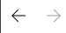

Navigation#
There are several ways to navigate between different views, and MyMoney keeps a history of the views you have visited . You can navigate back and forwards through that view history using these buttons at the top left:

Like any good web browser you can also use ALT-LEFT for Back and and ALT-RIGHT for Forward navigation.
You can pivot to new transaction sets using the following commands on the transaction view context menu:
Goto related transaction (F12)#
navigate between each end of a Transfer. This can also prompt to create a transfer if it finds a matching transaction in another account.
View Transactions by Account (F8)#
show all transactions in the same Account as the selected transaction
View Transactions by Category (F7)#
show all transactions with the same Category as the selected transaction
View Transactions by Payee (F6)#
show all transactions with the same Payee as the selected transaction
View Transactions by Security (F5)#
show all investment transactions with the same Security
You can also navigate using the Categories panel, the Payees panel or by selecting parts of a chart or report.